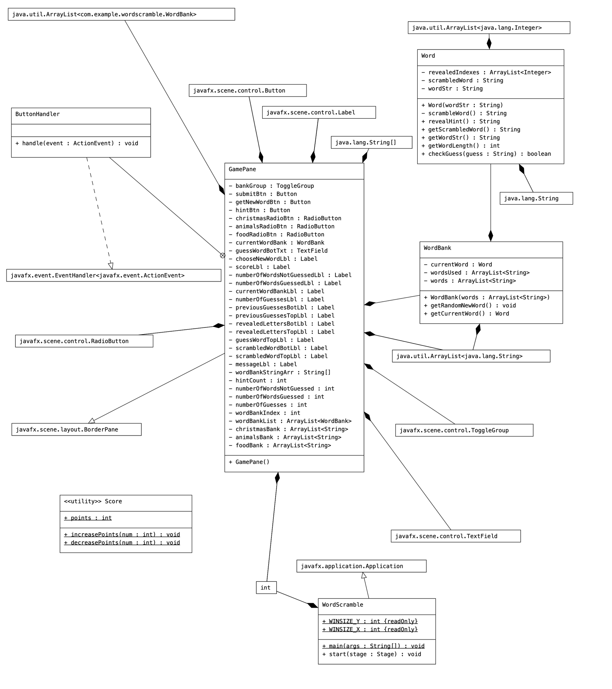
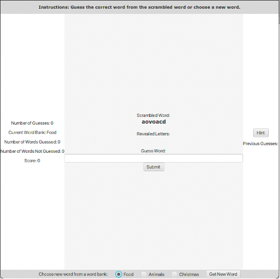
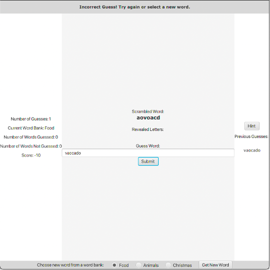
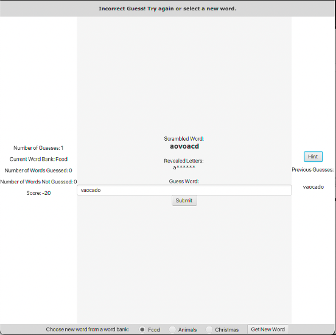
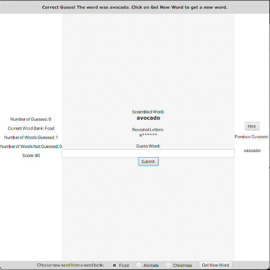
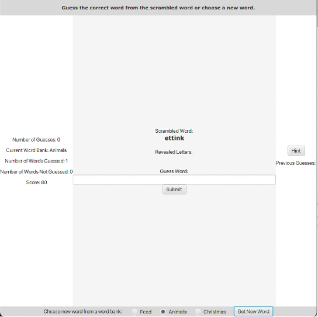

Introduction
I chose to create a miniature word guessing game for my honor's project named Word Scramble. The game has one player who must guess a word from the scrambled version of that word. My motivation for creating this game was to create something useful and interesting to me. By creating a game that sparks the player to think and contemplate a guess, it invites the player to get involved with the game and through the variety of words and genres, continue playing. Additionally, this game is a short-time-killer type of game, which means anyone could get an understanding of how to play very quickly and begin playing. The creation of Word Scramble also requires me to implement the concepts of object-oriented programming, sorting, GUI development, and game creation.
Requirements
The requirements for this Word Scramble game will be to provide an application and interface where the player can play the game in the most efficient, practical, simple, and enjoyable format. Therefore, the game will only contain the necessary elements but will provide an eye-pleasing display with separated and easy-to-read elements. The interface of the game will also be straightforward with the buttons' intentions labeled clearly and removing any confusion a player would have while playing.
Approach
My approach was to scratch up the basic details of the project including the use case, actors, and steps of execution. I also created a basic sketch of what the game could look like so that I have a basic reference point for creating the game. After figuring out what objects I would create, I created a UML diagram and included the relationships between the objects while creating the instance variables and methods for each object.
Steps of Execution
1. The user chooses a word bank
2. A random word is chosen from the selected word bank
3. The current word bank text is updated
4. The original word is scrambled
5. The scrambled word is shown on the screen
6. When the player presses the hint button, a random letter from the
word is shown in the correct position and the score is decreased
7. The player attempts to guess the word
8. The number of guesses count is increased and displayed
9. The player submits and the answer is compared to the unscrambled
word checking to see if they are the same
10. If they are the same, a congratulations message is displayed,
the number of words guessed count and number of guesses count is set
to zero, the score increases, and the player chooses a new word from
a word bank
11. If they are not the same, an incorrect guess message is
displayed, the number of guesses counts increases, the score
decreases, and the player can choose a new word or guess again
12. When the player chooses a word bank from the drop-down and
clicks the new word button, it checks to see if the previous word
was guessed or not
13. If it was not guessed, then the number of words not guessed
count increases, and the score decreases
14. A new word is chosen from the selected word bank, and the
instruction message is displayed, the current word bank text is
updated, and the word object is set to play again
Design (UML Diagram)
Simulation
Game Start
Incorrect Guess: provides incorrect guess message, decreases score, increases the number of guesses count, and displays the word in previous guesses
The player presses the hint button: a randomly selected letter in the word is revealed in the correct order under revealed letters and the score is decreased
The player guesses the word correctly: the congratulations message shows, the number of words guessed count increases, the score increases, the correct word is displayed, and the input text box is cleared and set to not editable
The Player chooses a new word after selecting a word bank: the number of words not guessed is updated increased and the score is decreased if the word was not guessed, and a new word from the selected word bank is provided and scrambled to display to the player
Conclusion
When creating this project, I faced a few problems that included figuring out how the border pane worked in JavaFX along with how to make the application well presented and organized. By overcoming these problems and creating a java project from scratch, I gained a greater understanding of java object-oriented programming. I think the greatest task that helped me with this project was contemplating and designing the objects and their relations using a step-of-execution list and a UML diagram indicating the relationships between the objects. From that point on, I coded the project without changing my basic design too much other than optimizing and eliminating some unnecessary objects and variables while adding one or two that allowed me to complete my vision for the game. Some possible improvements that could be made in the future include adding more color to the game to draw the player’s eyes to a certain message or area. This color would aid in the visual appeal of the game and would increase the player’s interest in the game. I could also improve the complexity of the game, by adding more word banks and additional settings in a separate pane screen to access and control features such as difficulty or score.